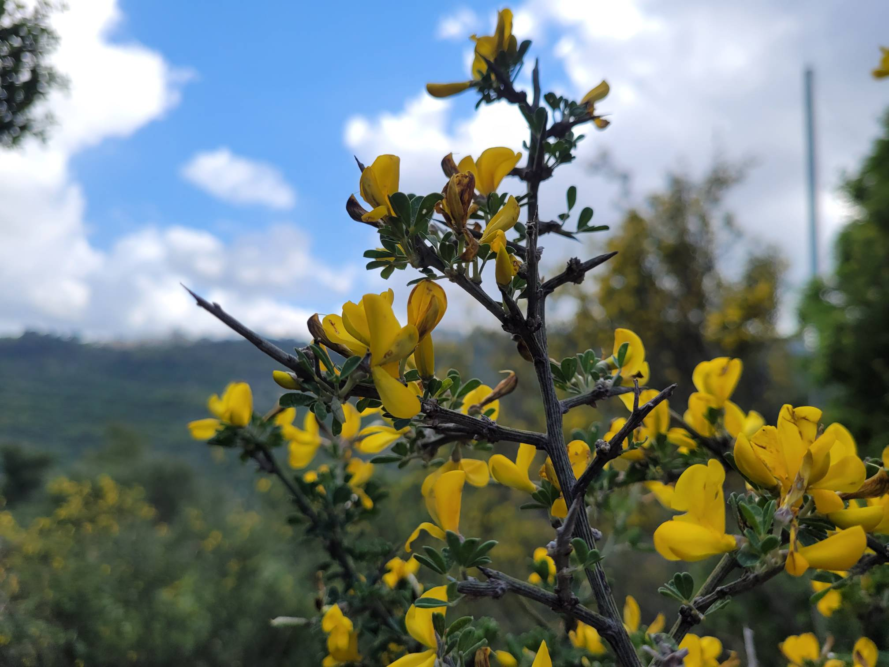

Haifa capital of the north
Haifa is a beautiful city located on the Mediterranean coast in Israel. This multicultural city serves as a significant economic, cultural, and transportation hub of the country.
Geographically, Haifa is situated in northern Israel, making it an important seaport and a key transportation junction for the region. The city is also renowned for its stunning landscapes, including lush green hills, Mediterranean beaches, and breathtaking views of Haifa Bay.
Throughout its rich history, Haifa has been home to diverse cultures and religions, making it a cultural and religious center. The city's population is multinational and multilingual, creating a unique atmosphere.
Haifa is also known for its educational and research institutions, including the Technion-Israel Institute of Technology and other prestigious universities.
This city combines a rich history, modern achievements, and beautiful nature, making it an attractive place to live and visit in Israel.
Nature and Parks
-

-

-

-

-

- 
Parks
-

Zoo
Haifa Zoo is an amazing place situated on the slopes of Mount Carmel. It is home to a variety of wildlife, including exotic animals and birds. Visiting Haifa Zoo provides a unique opportunity to see and learn about the diversity of animals from around the world. You'll find interesting educational programs and moments to observe animals exhibiting their natural behaviors. Haifa Zoo also serves as an important center for conservation and research, contributing to the preservation of vulnerable species and their lifestyles in the wild.
Address: Ha-Tishbi St 124, Haifa
-
Carmel National Park
Carmel National Park is an enchanting nature reserve located on the slopes of the picturesque Mount Carmel in Northern Israel. This park is renowned for its diverse flora and fauna, including wild mountain plants and unique bird species. The park offers numerous hiking and biking trails, providing visitors with a wonderful opportunity to enjoy scenic landscapes and natural wonders. Carmel is also an important archaeological area, where ancient traces of human activity have been discovered. Visiting this park brings the joy of nature, adventure, and the chance to explore the history and culture of the region.
Address: Mount Carmel
-

Sculptures Garden
Sculptures Garden, also known as Gan Hapsalim in Hebrew, is a captivating park located in Haifa, Israel. This unique urban oasis features a remarkable collection of contemporary sculptures created by local and international artists. Visitors can explore the open-air art gallery, meander through lush greenery, and appreciate the fusion of art and nature. Sculptures Garden offers a serene escape from the urban hustle, making it a perfect spot for a leisurely stroll, artistic inspiration, or a peaceful retreat. With its dynamic display of sculptures, this park adds a touch of culture and creativity to the beautiful cityscape of Haifa.
Address: Sderot Hatsiyonut & Shnayim Be'NovemberHaifa, Haifa
-
Little Switzerland
"Little Switzerland" in Haifa is a unique natural location known for its picturesque beauty and active opportunities. This nature reserve offers visitors a wide range of hiking trails that wind through scenic forests and hills. The elevated points within the park provide breathtaking views of the city of Haifa and the Mediterranean Sea. "Little Switzerland" is also an excellent spot for picnics and family outings, allowing you to enjoy nature and active recreation in the midst of stunning natural surroundings and ambiance.
Address: Mount Carmel
- See more →
Transportation
Haifa provides a diverse range of transportation options for the convenience of residents and visitors. This includes buses that cover the entire city area, as well as trains and a suspended tramway, connecting different parts of the city and its suburbs. The city also boasts a well-developed network of roads and bridges, facilitating car traffic. Additionally, Haifa's port serves as a vital hub for maritime transportation in the region, connecting to many other ports in the Mediterranean Sea.
-

The Carmelit
The Carmelit is an underground transportation line that provides urban transportation within the city. It is often mistakenly referred to as a subway, but the Carmelit operates on a funicular system. The Carmelit line has 6 stations. Its track length is 2 km, including the stations, or 1,803 meters without counting the stations.
Go to the website → -

The Cable Car Haifa
The Cable Car is part of the public transportation system, and the cable car, which spans 4.4 km and has an elevation difference of approximately 460 meters between the end stations, offers a unique opportunity to enjoy breathtaking views of Haifa and the Mediterranean Sea from a bird's-eye perspective.
Go to the website → -

Rakevet
"Rakevet" is part of Israel's public transportation system. With Rakevet, you can travel across Israel, making it easier for residents to move around without difficulties. There are 7 stations located within Haifa.
Go to the website → -

Boats
From Haifa, you can embark on a sea voyage. Small ferries offer a picturesque way to travel between Haifa and Acre. Larger ships will take you to neighboring countries.
Go to the website → -

Cable Car
The commercial cable car in Haifa offers a premium experience for residents and tourists, providing unparalleled vistas of Haifa and the Mediterranean Sea. Offering a luxurious journey between various city levels, it caters to those seeking a more exclusive and scenic mode of transportation, adding a touch of elegance to exploring Haifa.
Go to the website → -

Metronit
"Metronit" is an integrated public transportation system in Haifa and its suburbs. It is a high-speed bus that operates in a dedicated lane, allowing for fast travel even during peak hours.
Go to the website →
Haifa offers a rich array of entertainment options for all ages and interests. You can explore the city's cultural treasures by visiting museums, art galleries, and historical landmarks like the Bahá'í Gardens. For those who enjoy an active lifestyle, there are beautiful beaches and scenic parks for walks and picnics. Food enthusiasts will find a plethora of restaurants offering a variety of culinary delights. The nightlife is vibrant with bars, clubs, and concerts ensuring a fun-filled evening.
Museums and Attractions
-

Madatech Museum
The Madatech Museum is renowned interactive exhibits, showcasing various aspects of science and technology.
The museum invites visitors on a fascinating journey into the world of technical innovations, scientific discoveries, and the history of technology. Here, you can explore interactive demonstrations, exhibits, and experimental installations that provide a deeper understanding of the principles and applications of science and technology.
Madatech also organizes educational events and programs, inviting visitors, especially young people, to learn more about the world of science and technology.
This museum is an important center for the study and understanding of technological achievements and their impact on the modern world.
Website → -

Railway Transport Museum
The Railway Transport Museum in Haifa offers an exciting journey into the history and development of railway systems. Situated in the cultural hub of Israel, this museum unveils the rich history of railway transport in the region. Visitors can explore a diverse array of exhibits, including antique locomotives and carriages, while learning about the pivotal role railways have played in Israel's infrastructure and development. Additionally, the museum features interactive elements and educational programs, making it an engaging and informative destination for visitors of all ages.
Website → -

Bahá'í Gardens
The Bahá'í Gardens, also known as the Bahá'í Terraces or the Bahá'í Gardens of Haifa, are a unique destination in Haifa, Israel, drawing tourists and holding spiritual significance for Bahá'í followers. These gardens are comprised of multiple terraces situated on the slopes of Mount Carmel, offering breathtaking views of the city of Haifa and the Mediterranean Sea. Among the notable architectural and spiritual features of the gardens is the Bahá'í Shrine, which is open to visitors. This sacred site serves as a focal point for Bahá'í worship and meditation.
The Bahá'í Gardens are not only a significant religious structure but also one of Israel's most beautiful tourist attractions, seamlessly blending natural beauty with spiritual significance.
Website → - See more →